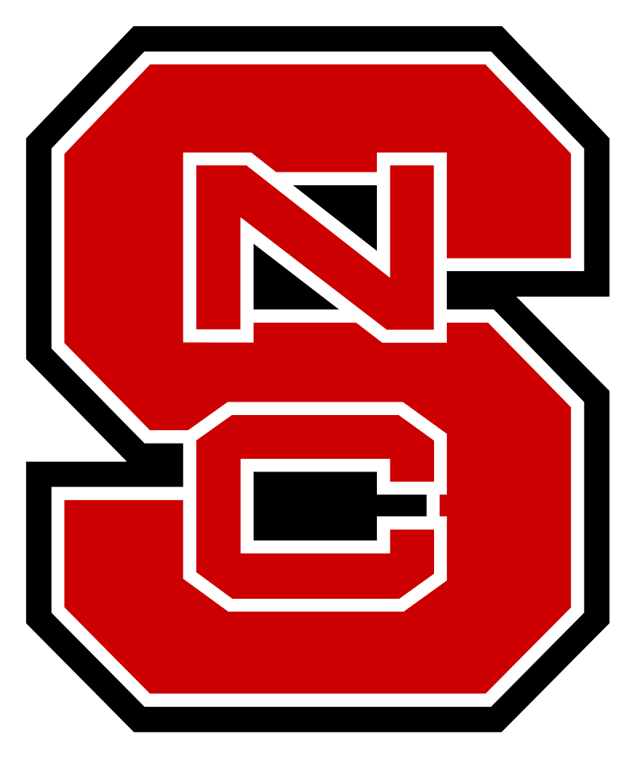 Current Students at North Carolina State University:
Graduate:
-
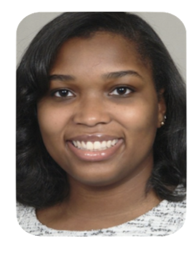
Shandler Mason (Computer Science Ph.D., Expected graduation 2026)
Current UnderGraduate:
-
Natalie Meuser (NSF REU, Summer 2023)
-
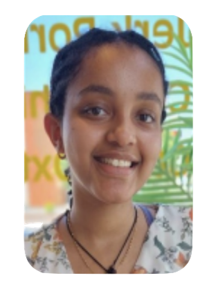
Faris Soliman (NSF REU, Summer 2023)
-
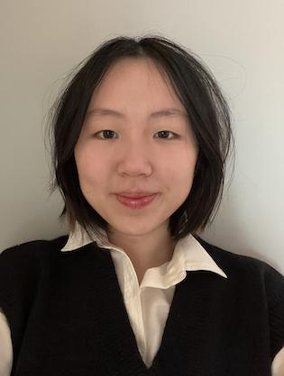
Sarah Musa (NSF REU, Summer 2023)
-
Rafael Phillips (Summer 2023)
Current High Schoolers:
Past UnderGraduate:
-
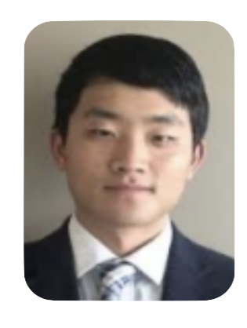
Marcus Kim (REU, Fall 2022 and Spring 2023)
-
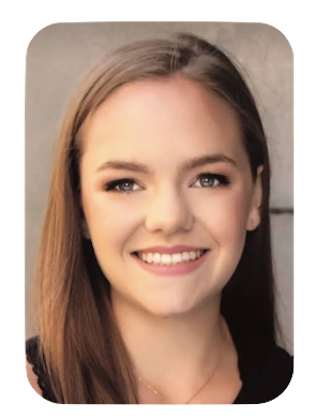
Hannah Estes (Fall 2022 and Spring 2023)
-
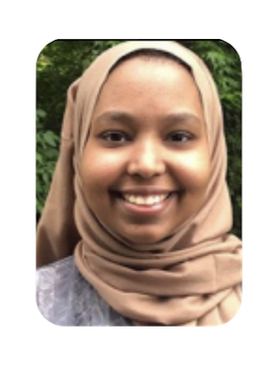
Afnan Idries (Independent Study, Fall 2022)
-
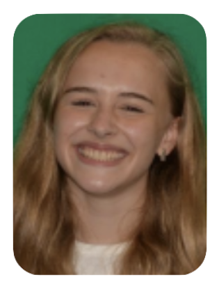
Mollie Jordan (Independent Study, Fall 2022)
Dissertation Committee Members:
- Aafaq Sabir (Written Prelim Exam)
- Md Rayhanur Rahman (Oral Prelim Exam)
- Amy Isvik (Oral Prelim Exam)
- Isabella Gransbury (Oral Prelim Exam, Fall 2023)
- Kewen Peng (Committtee member)
- Lorenzo Niel (Oral Prelim Exam)
- Vaibhav Garg (Oral Prelim Exam, Summer 2023)
- Andre Lustosa Cabral De Paula Motta (Dissertation Committee member)
- Erfan Al-Hossami at UNC Charlotte (Dissertation Committee member)
Former Students at the University of Tulsa:
Graduate:
-
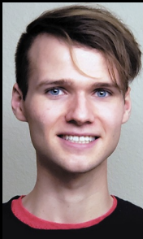
Peter Robe (Computer Science M.S., Graduated 2021)
-
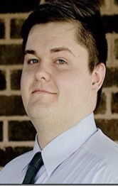
Jacob Hart (Computer Science M.S., 2023)
-
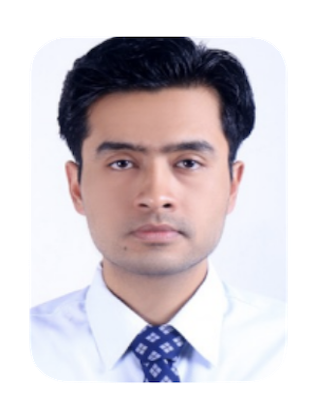
Abim Sedhain (Computer Science M.S., 2022)
Dissertation Committee Members:
- Sami Abuhaimed (Ph.D. 2022)
- Saeid Samadidana (Ph.D. 2019)
- Zenefa Rahaman (Ph.D. 2018)
- Osman Yusel (Ph.D. 2017)
UnderGraduate:
- Jacob AuBuchon (REU 2021, TURC 2021, Computer Science UG)
- Alex McAuliffe (REU 2021, TURC 2021, Computer Science UG)
- Philip Rahal (TURC 2022, Computer Science UG)
- Ronnie Phillips (TURC 2022, Computer Science UG)
- Issa Al Rubaye (TURC 2022, Computer Science UG)
- Marcus Ensley (TURC 2022, Computer Science UG)
- Riley Raash (TURC 2022, Computer Science UG)
- Yao Wang (TURC 2022, Computer Science UG)
- Noura Elnahrawy (Computer Science UG)
- Vaishvi Diwanji (Computer Science UG)
- Grey Bodi (Computer Science UG)
- Jeff Luong (Computer Science UG)
- Devin Pattison (TURC 2021, Computer Science UG)
- Ben Riethmeier (TURC 2021, Computer Science UG)
- Bali Ong (TURC 2020, Computer Gaming and Simulation UG)
- Katherine Kwasny (TURC 2020, Computer Gaming and Simulation UG)
- Jarrow Myers (TURC 2019, Computer Science UG)
- Sam Gurka (TURC 2019, Computer Science UG)
- Yingze Chen (TURC 2019, Computer Science UG)
- Kevin Gerestner (Computer Science/Computer Gaming and Simulation UG)
- Alexandra Bejarano (Computer Science UG, currently Ph.D. student at Colorado School of Mines)
- Caroline Lott (Psychology UG)
- Danny Tapp (Mechanical Engineering UG)
- Van Nguyen (Computer Science UG)
- Yiting Bai (Computer Science UG)
- David Magar (Information Technology UG)
- Michael Sun (Computer Science UG, currently M.S. student at University of California, at Irvine)
- Brooke Shepherd (TURC 2018, Computer Science UG)
- Jiayi Lu (Computer Science UG)
- Philip Gibson (Computer Science UG)
- Cheng Zhou (TURC 2018, Computer Science UG)
- Se Yeon Kim (TURC 2016, Computer Science UG)
- Carlos Martos (Computer Science UG)
- Steven Alfonso Hernandez (Computer Science UG)
- Cao Huynh (Computer Science UG)